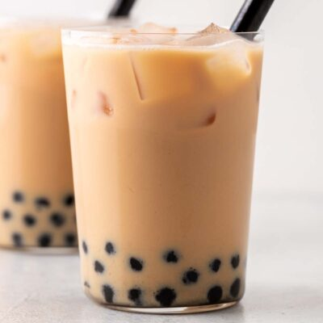

Hong Kong Boba Tea

Original recipe from Oh, How Civilized
Author: Jee Choe
Ingredients
Hong Kong Milk Tea
- 1 cup water
- 3 black tea bags
- 2 tablespoons sweetened condesnsed milk
- ¾ cup ice
Tapioca Pearls
- ¾ cup water
- 2 tablespoons brown sugar
- ¼ cup tapioca balls
Instructions
- Steep tea bags in 1 cup of hot water for 5 minutes. Set the temperature to 195 F if you're using an electric kettle with a temperature setting. Use filtered water if possible.
- Discard tea bags and stir in sweetened condensed milk. Stir the sweetened condensed milk until it dissolves into the tea. Set aside to cool.
- Boil ¾ cup of water and brown sugar in a saucepan. Add tapioca balls. Combine water and brown sugar in a saucepan and bring to a boil. Once you see big bubbles (2-4 minutes), add tapioca balls. Keep boiling for 8 more minutes on medium-high heat. Cool slightly, until tapioca balls aren't too hot to eat. They should still be pretty warm.
- Put warm tapioca balls in brown sugar syrup into a cup. Add ice, then the cooled down sweetened tea. Serve immediately and stir before drinking. Use an extra wide straw to drink.